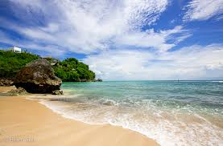

Your Adventure Awaits
Popular Destinations
 Explore the romantic streets of Paris, a city that embodies art, history, and culinary excellence. Stroll through the charming neighborhoods of Montmartre and Le Marais, where you can admire breathtaking architecture and vibrant street life. Don’t miss the chance to visit world-renowned museums such as the Louvre and Musée d'Orsay, where you can gaze upon masterpieces by Da Vinci and Van Gogh. As you wander along the Seine River, savor a classic French meal at a cozy bistro or enjoy a leisurely picnic in one of Paris’s stunning parks, like the Jardin des Tuileries or Luxembourg Gardens. Experience the magic of Paris as the sun sets behind the Eiffel Tower, illuminating the skyline in a golden hue, and discover why this city is often called the City of Love.
Explore the romantic streets of Paris, a city that embodies art, history, and culinary excellence. Stroll through the charming neighborhoods of Montmartre and Le Marais, where you can admire breathtaking architecture and vibrant street life. Don’t miss the chance to visit world-renowned museums such as the Louvre and Musée d'Orsay, where you can gaze upon masterpieces by Da Vinci and Van Gogh. As you wander along the Seine River, savor a classic French meal at a cozy bistro or enjoy a leisurely picnic in one of Paris’s stunning parks, like the Jardin des Tuileries or Luxembourg Gardens. Experience the magic of Paris as the sun sets behind the Eiffel Tower, illuminating the skyline in a golden hue, and discover why this city is often called the City of Love.
Exotic Getaways
 Escape to the serene beaches of Bali, where turquoise waters meet lush, green landscapes. Bali offers a unique blend of adventure and relaxation, from surfing on world-class waves to unwinding in luxurious beachfront resorts. Discover the island’s rich culture by visiting ancient temples like Uluwatu and Tanah Lot, where breathtaking views and stunning sunsets await. Enjoy exhilarating hikes through the rice terraces of Tegallalang, or immerse yourself in the vibrant local markets filled with handicrafts and exotic spices. Don’t forget to indulge in Bali's renowned spa treatments and enjoy delicious Balinese cuisine, including dishes like Nasi Goreng and Babi Guling. With its warm hospitality and stunning scenery, Bali is a paradise that promises unforgettable memories and rejuvenation.